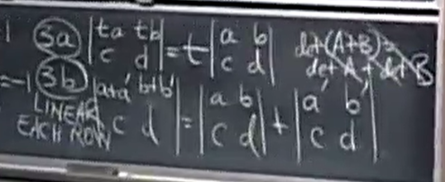

MIT线性代数笔记的第三部分
- 行列式
- 克拉默法则,逆矩阵,体积
- 特征值与特征向量
- 对角化和A的幂
- 微分方程, exp(At)
- 马尔可夫矩阵,傅里叶级数
完整链接:
MITLinearAlgebra
MITLinearAlgebra(2)
MITLinearAlgebra(3)
MITLinearAlgebra-4
行列式与代数余子式
首先明确学习行列式的意义：为了后续计算特征值做铺垫
$detA$用于表示A的行列式
目前我们已知的是，行列式可以用来反映可逆性（invertibility）,行列式等于0代表矩阵(方阵)不可逆
从行列式的若干个性质开始：
- 单位矩阵的行列式等于1
- 交换矩阵的行row exchange,行列式的值的符号会相反inverse sign of det 由此可以推出置换矩阵(permutation matrices)的行列式为1或者-1
- 行列式可以对某一行进行线性组合
- 对行列式的数乘等于对某一行单独的乘积
- 行列式相加等于某一行加一起而非所有行加一起

扩展性质:
- 两行相等则行列式为0
- 消元法时,对行k减去j倍行i,行列式不变
- 某一行为零向量,行列式为0
- upper triangular matrix上三角矩阵的行列式等于对角元素乘积
- 当且仅当矩阵A是singular(not invertible)的时候,行列式为0
- $detAB = detA\times detB$可以直接的推导出逆矩阵的行列式
- 转置之后行列式的值不变(列交换也可以改变符号)
代数余子式cofactor
每一个行列式可以被分解为$N^2$个单独的行列式,每个非零行列式的每行每列都只有一个元素,因此每个行列式可以得到$N!$个非零的基础行列式
$det A= \sum \pm a{1\alpha}a{2\beta}a{3\gamma}…a{n\omega}$
以上就是行列式的公式,代数余子式$C{ij}$
$cofactor of a{ij}$指的是其中包含$a_{ij}$的项目,也就是把i行和j列选定的项, 行列式是否为正取决于$i+j$的正负
行列式的另一种计算方式就是把某一行的元素乘以他们的代数余子式的和
$det A = a{11}C{11}+a{12}C{12}+a{13}C{13}$
克拉默法则与逆矩阵和体积
特征值和特征向量
定义式非常熟悉了
- 特征值的和等于矩阵的迹
- 特征值的乘积等于矩阵的行列式
投影矩阵的特征向量，分为在投影平面上的所有向量和垂直于投影平面的向量
求解方式就是移项后行列式$det(A-\lambda I)=0$，可能会出现重根，重根比较麻烦（老师原话：重根是18.06痛苦的根源）
特征向量是上面那个移项后矩阵的零空间成员（零向量有很多，只需要列出来一个）
一个性质：如果给定的矩阵A加上若干个，例如m个单位矩阵，则特征向量不变，但是所有特征值都会同步加上m
当系数矩阵是旋转矩阵（行列式为1的正交矩阵）的时候，它的特征值计算会出现复数，反对称的矩阵特征值是纯虚数，对称的矩阵特征值是实数
上三角矩阵的对角线元素就是特征值，退化矩阵，2x2的矩阵只有一个特征向量
对角化和A的幂
如果A矩阵有n个线性无关的特征向量，组成特征向量矩阵S
对角化矩阵的元素就是每个特征值
- 对角化之后可以很方便的求A的幂
- 所有的特征值绝对值小于1是一个使得矩阵幂“稳定”的条件，即结果会趋向于0
那么哪些矩阵可以对角化？
即如何确保矩阵必然有n个线性无关的特征向量？
- 所有的特征值不同
斐波那契数列可以写成矩阵的形式，增长速度由特征值的最大值决定
可以写成差分方程形式
求解A的特征值就知道斐波那契数列的增长速度了
微分方程和exp(A)
解等于指数的特征值的组合（//TODO）
exp(At)可以进行泰勒展开，如果A可以对角化，还可以写成
$Se^{\Lambda t}S^{-1}$
马尔可夫矩阵，傅里叶级数
应用层面
马尔可夫矩阵：
- 所有的元素大于0
- 所有列元素加起来等于1
- 所有矩阵的幂仍是马尔可夫矩阵
对称矩阵
symmetric matrix
实对称矩阵有较好的性质:
- 实对称矩阵的特征值都是实数
- 能够挑选出完全正交的一组特征向量，这组经过挑选得到的向量可以组成正交矩阵
从第二条可以得到对称矩阵的谱定理
这个定理十分重要，在物理上被叫做主轴定理
根据谱定理，如果把正交矩阵写成一群列向量，则可以把上面的公式展开成n个投影矩阵的和
实对称矩阵还有一条比较重要的性质：矩阵主元中positive的数量等于特征值中positive的数量
特征值全为正数的对称矩阵是正定矩阵中重要的一类，关于正定矩阵会在后面进行更详细的讨论
正定矩阵和最小值
正定矩阵有几种判定的条件，正定矩阵定义在对称矩阵之上
- 矩阵所有的主元大于0
- 矩阵所有的特征值大于0
- 矩阵的各阶主子式行列式值大于0
- $x^TAx$恒大于零
第四点是比较接近正定定义的一种判定方式，它反映了以它为二次型矩阵时，f(x)函数值恒大于0的情形，进一步这个f(x)的偏导数矩阵，也就是这个矩阵A
如果将f(x)进行配凑，得到二次项之和，那么每一个二次项前面的系数都是主元，这也是主元、特征值作为判定条件的原因
对于非正定的矩阵，形成的二次型的图像会在原点形成一个鞍点saddle point，鞍点不同方向的梯度正负不同。而对于正定矩阵对应的二次型函数的图形，是一个抽象的bowl的形状或者说是一个抛物面。
对于向量$x$维度为3的时候，bowl会抽象为一个椭球，这个椭球的主轴就是特征向量的方向，这也是上一部分主轴定理名字的由来
插播一部分正定矩阵的内容，正定矩阵的定义式来自于最小二乘问题 $A^TA$ ，我们想了解关于这个表达式的正定性， $A$ 是一个长方形矩阵，行数大于列数。
两个前置结论：
- 一个正定矩阵的逆矩阵还会是正定矩阵吗？是的。逆矩阵的特征值等于原矩阵特征值的倒数，也因此保持同号，进而同样满足正定矩阵特征值都为正的判定条件。
- 两个正定矩阵的和也仍然是正定矩阵。
使用正定矩阵的定义式判断$A^TA$